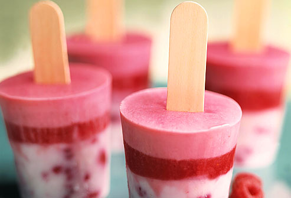

Mi cocina
Cocinando con amor... :D
Favoritos:

Historial:
- Lasaña de carne
- Torta de chocolate
- Pasta Alfredo
- Arroz Marinero
- Fritada
Tres recetas de panqueques salados light.
2 de Julio 2018
Los panqueques salados, también conocidos como crepes, son muy fáciles de hacer: requieren de pocos ingredientes, son económicos y, sobre todo, contienen bajas calorías. Además, se pueden preparar con rapidez y nos pueden ayudar a salir de un apuro. Si buscas opciones light para llegar con la mejor figura al verano, te recomendamos tres opciones muy variadas e interesantes.
Escribe un comentario:
Por favor pongas las crepes de chocolate.
Se ven deliciosas voy a probarlas.
Por favor pongan los videos para ver como quedan.
6 postres frutales ideales para disfrutar el verano.
12 de Julio 2018

El verano y los días calurosos se aproximan, por lo que desearás comer platillos y postres muy frescos, que te mantengan con toda la actitud en esta temporada. Es por esto que si decides pasar tus vacaciones en casa, una gran opción para aprovechar el tiempo y divertirte, son estos postres veraniegos y refrescantes ¿te animas?.
Escribe un comentario:
Me encanto! Agreguen tambien postres para el otoño.
Les agraddezco era lo que estaba buscando... pero una consulta, por favor pueden poner postres frios-calientes.
Estan excelentes, voy a probarlas y les cuento que tal!